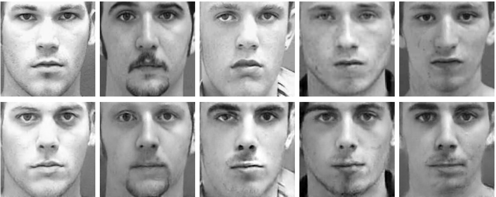
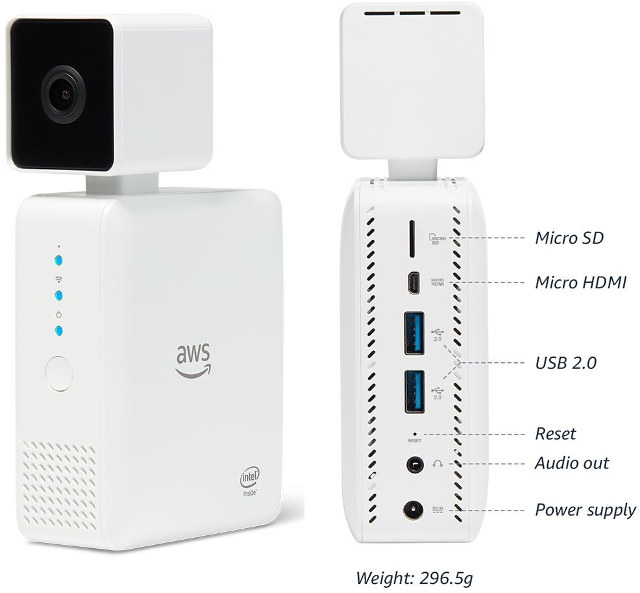

Loren Heyns, Georgia Institute of Technology
Loren Heyns
Most mobile sensors worn by individuals track their own biometrics. For example, FitBit records walking and heart-rate. The typical mobile sensor doesn't record data from the people and locations around you. In contrast, the following sensors are designed to capture information from your surrounding environment, hands-free.
Narrative Clip 2012 to 2016 - Consumer focused "Life-Logging" Camera
The Narrative Clip was initiated in 2012 by a $500,000 kickstarter campaign. The small "life-logging" camera automatically took a picture every 30 seconds.
Narrative shipped 40,000 units of the Narrative 1 and 2 combined.[2] When the company could not attract further financing in 2016, only pre-ordered Narrative 2 units were delivered. The Narrative Clip 2 was packed with new features: video capture, Bluetooth control, a built-in Wifi cloud uploader and modular attachment system.]
At the peak of it's potential, why was the Narrative Clip unable to move forward?
Narrative's CTO stated that the cashflow problems in 2016 were due to a decline in venture capital for wearables.
The assets were acquired by some of the former founders and employees, who are now preparing for a relaunch. [3]
Narrative Clip updates planned for the relaunch:
- Shift from sole focus on consumer to business applications
- Adding revenue generation from cloud storage
- New manufacturing partners
Narrative's loss of funding in 2016 may have been partially related to the public privacy outcry surrounding the privacy infringements of Google Glass cameras in restaurants and bars.
Clip Cameras - Safevant Police Badge Camera, Ion Clip Camera and Vidcie (Looxcie for vloggers)
AI cameras could replace the use of RFID and Ultra-Wide Band (UWB) tags by using camera images to identify all supplies, vehicles and workers on the construction site. AI can track minor difference on objects to establish uniqueness.
The $5bn sensor market in 2018 is anticipated to grow into a $160bn wearable technology market in ten years. Across 42 different categories of wearable devices, optical sensors are anticipated to hold the largest share of the wearable market in 2022. The second largest percentage is three-dimensional inertial measurement units (IMU) tracking force and angular rate measurement units using accelerometers and gyroscopes, often accompanied by magnetometers to provide additional directional data.
Source: IDTechEx's Report on Wearable Sensors (Hayward, Pugh, Chansin, 2018)
Beyond the realm of construction sites, the entire city looms as a prospective source of infrastructure sensor data for Digital Twins modeling on an urban scale. (Mohammadi, Taylor 2016) As mobile sensors capture data from many vantage points to make predictive models more accurate, we'll need to ensure that we don't sacrifice privacy for safety and extreme accuracy. For example, an array of construction cameras sharing real-time 3D spatial data with all the contractors on the site could significantly increase safety. Without a means to filter out people passing by from shared videos, construction firms could be revealing the whereabouts of thousands of people to their contractors, making the public walking by the site vulnerable to home break-ins, blackmail or embarrassment if videos are posted online.
● AI camera data collection is no longer just about photos - it now supports 3D spatial analysis and audio interaction
● Super steady stabilization software using spatial data to correct camera orientation
● A public increasingly accustomed to photos taken in public
● Automatic stitching of view points between multiple cameras
● Itegration with AR/VR/MR experiences
● Smaller cameras - in watches and headphones
● Flat surfaces can be cameras on backpack straps, vests, helmets (University of Utah, 2016)
● High bandwidth - Verizon and AT&T launched 5G speed cellular in Atlanta in 2018
● Better playback devices, better streaming to phones, glasses, watches
● Aging population - automation uses of wearable cameras for mobility, guidance, memory and security
● For paying tips - Real-time transactions enabled by facial recognition tools
● Clearing data of recognizable individuals - De-identification and Data Clipping
How can we indicate the type of data capture underway, so nearby individuals
are aware of the degree to which their actions are recorded?
Google Clips use "white" to indicate intermittent video recording.
Continual unfiltered recording could be "red", the current standard for video recording.
"Green" and "blue" could be safe colors indicating that privacy is being protected.
Oculus founder Palmer Luckie's new company Anduril uses AI cameras with 600-watt lasers which were originally developed for cosmetic hair-removal devices. Apple's TrueDepth Camera on the 2018 iPhone X uses an infrared (IR) emitter to projects over 30,000 dots onto the user's face, which are analysed by a lower power infrared camera yet to be duplicated by other vendors. (Intel RealSense has yet to succeed at smooth infrared spatial 3D capture.)
A new breed of AI cameras could focus on assembling anonymous datasets from multiple perspectives to provide ongoing updates to 3D city models. Data captured could include temperature, noise levels, air quality, etc. To achieve this goal, AI could remove personal identifiers before sharing data. Example:
The images in the top row were de-identified to produce each image below. Each has a similar face structure to the one above to avoid leaving holes in the source image. Most prior de-identification systems used the k-same framework, which is critiqued as less effective with poor quality. The new PrivacyProtective-GAN (PP-GAN) framework retains "structure similarity." (Yifan, Yang, Ling, 2018) The same Generative Adversarial Network (GAN) process is used to alter faces within video. (Carnegie Mellon University, 2018)
Individuals could have the option to access personal data related to themselves and members of their data sharing groups using Privacy-Preserving Face Recognition. (Erkin 2009)
A committee of peers with multiple decryption keys could decrypt additional data in the event of a crime.
Anonymous Confidentiality Scale - Conveys the probability of protecting identities with the current data capture settings. Clearing data of personal identifiers is rarely 100% guaranteed.
The more pieces of information occurring together, the harder it is to clear the data of identifiers. Information that increases likely identification of people includes: physical characteristics, height, age and gender, memberships, job type, length of service and expressed opinions.
Identity "Reidentification" is used by building and event security systems to track individuals as they move across a site.
Google Clips store data only on the camera, where it's fully encrypted. Google Lens identifies everything from plants to pets, but not people. When Google Lens enables human identification, will it be limited to one's immediate friends, coworkers, fellow students?
Identity reidentification seeks to find matches despite different poses, illumination, scales, occlusions, makeup and environmental variations. No existing face data is needed at the start, unlike facial recognition which requires massive datasets. This study uses the ResFace learning algorithm as the last step in a Deep Neural Network (DNN) pipeline to pull from 200,000+ faces on security cameras. Computation occurs in parallel on cameras. (Miraftabzadeh 2018) [5]
Bringing processing to the edge of the network to improve real-time decision making (computing and storage nodes close to Internet of Things (IoT)) devices and sensors. (Design to sustain a power outage?)
Discussion of automation of identity tracking of suspicious individuals using cameras in combination with data from social networks (Instagram, Twitter, and Facebook) as well as government systems.
A proposal: Use surrounding personal sensors, on the edge, to allow the crowd itself to track the offending individual. Pinpoint the geo-position of the individual in multiple photos to improve analysis by comparing angles and lighting differences for a single point in time.
Do we need an alternative to the front-facing camera? Perhaps a 135 degree camera on the edge of smartphones to allow for anonymous data capture while checking messages.
Amazon's DeepLens is a $249 device for developers who want to build and prototype vision-centric machine learning models. DeepLens consists of two parts: the model and a Lambda function that runs instances of the model in the AWS cloud.
"DeepLens makes it easy to import models from virtually all the popular tools, including Caffe, TensorFlow, MXNet and others."
"DeepLens benefits from Intel-optimized learning software tools and libraries (including the Intel Compute Library for Deep Neural Networks, Intel clDNN) to run real-time computer vision models directly on the device for reduced cost and real-time responsiveness." Learn More
While excellent starter kits, both rely on Internet connectivity to process data.
Privacy topics are explored further in Rule-Based Spatial Data Exchange - An exploration of new perspectives regarding the public use of camera sensors.
Make an impact, share your data stream! By collecting and aggregating anonymous, open data we can improve health, safety, transit, education, work, air quality, water quality, energy conservation and all stages of building construction. Free your data and free your community to reach its full potential.
AI cameras provide an opportunity for organizations and individuals to monitor and improve safety, productivity, quality, scheduling and related data analytics. Sharing data with surrounding systems will greatly increase the impact and cost savings for all data contributors by removing redundancy while adding resiliency and accuracy through data captured from multiple vantage points.
AI cameras with spatial capabilities that update 3D models in real-time have the potential to transform industries from construction to healthcare. AI cameras have the potential to update BIM data to adjust calendars automatically for deliveries and contractor schedules as project managers work with predictive 3D models to preview workflow projections as they watch for anomalies while training AI.
Through the use of de-identification, AI cameras can be used to contribute data to real-time city models without sacrificing privacy and security. With anonymous retrieval standards, facial recognition services by Apple, Facebook, Google, Amazon and Microsoft [9,10] can be used to securely identify individuals prior to de-identification so they can be provided with encrypted copies of photos and videos of themselves taken by others. Under special circumstances, a group of peers could be granted permission to unlock additional data for solving crimes.

{kind=link}